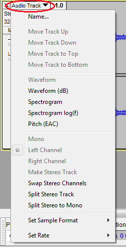

Audio Track Dropdown Menu
From Audacity Manual
|
 |
The Audio Track Dropdown Menu is accessed by clicking in the Track Name, by the downward-pointing triangle
Use the Drop-Down to manipulate individual or stereo tracks:
There is no need to select the track before accessing the dropdown menu.
|
Name...
Displays the "Track Name" dialog where you can give the track a new name. Useful in multi-track projects to provide a visual indication of the content of each track.
Moving Tracks
Any individual track can be moved up or down using the menu items.
- Move Track Up: Moves track up.
- Move Track Down: Moves track down.
- Move Track To Top: Move the track to the top of the project window.
- Move Track To Bottom: Move the track to the bottom of the project window.
Waveform
This first half of this waveform is a "Chirp" tone which stays at the same amplitude (loudness), as shown by the horizontal top and bottom. The linear scale on the left goes from +1 at the top (the maximum possible loudness without distortion when the signal is positive) to -1 at the bottom (the maximum when it is negative). The horizontal line centered on 0.0 is silence. What you can't see without zooming much further in is that the pitch of this tone is gradually increasing. Zooming would show the individual cycles in the waveform (the positive and negative peaks) occurring much closer together at the end of the sound. The second half of the waveform is the word "Audacity" spoken by a male voice.
This image is a waveform view of an extremely short chirp, one tenth of a second, with only a few cycles, where the pitch increases very rapidly. As it's so short, we can zoom in to show the closer spacing of the cycles as the frequency (and hence the pitch) increases from left to right.
Waveform (dB)
This is the same chirp and word as in the first Waveform image, but in this view the vertical scale is in dB. This is a logarithmic method of displaying the amplitude.
The dB range of the vertical scale is set in .
Spectrogram
This view of the same chirp and word shows how the amount of energy in different frequency bands changes over time. Higher frequencies are at the top of the scale, lower frequencies at the bottom. The blue color is the least energy and the red and white are the most. The progressive increase of pitch in the chirp tone is vividly demonstrated by the upward sloping diagonal line. Spectrogram view also confirms that the "Audacity" word has most energy in the middle of the word.
- Go to the Spectrograms Preferences to see the options for adjusting exactly how the spectrum is displayed.
- You can click in the Vertical Scale at any time to zoom in to a particular frequency range, or right-click to zoom out. Frequencies higher than half the sample rate of the track are not displayed because a given rate cannot contain higher frequencies than that.
- This tutorial in the Wiki shows how the Spectrogram view can be used to help track down and eliminate hard to find clicks.
Spectrogram log(f)
This view is the same as the Spectrogram view except that the vertical scale is logarithmic.
Pitch (EAC)

Pitch (EAC) view highlights the contour of the fundamental frequency (musical pitch) of the audio, using the Enhanced Autocorrelation (EAC) algorithm.
The EAC Algorithm was developed to produce a mathematical representation of the changes of pitch in a piece of audio. The aim was to allow automated comparison of sound files so that two versions of the same tune could be recognized as being similar, even if played in different keys, or on different instruments.
Splitting and Joining Channels
- Mono, Left Channel and Right Channel Mainly used on each of multiple single channel tracks (ones that are not the split left and right channels of a stereo pair) to mix to a final stereo track. "Mono" feeds the output of that track to both left and right speakers on most two channel systems. "Left Channel" and "Right Channel" feed it only to that respective speaker. Currently Audacity does not support multi-channel playback.
- Make Stereo Track Use this command on the upper of two adjacent, single channel tracks which you want to join into one stereo track. The upper track always becomes the left channel of the new stereo pair and the lower the right channel, irrespective of whether each was mono, left or right before joining to stereo.
- Swap Stereo Channels Use this command on a stereo track to swap the left and right channels without having to split the stereo track (see below). The left channel and the right channel and will change places, so that the audible content of the left channel moves into the right and the audible content of the right channel moves into the left.
- Split Stereo Track splits the two channels of a stereo pair into separately editable tracks for left and right channels, left above the right. If you are mixing multiple single channel files, you might want to use the "Split Stereo to Mono" command noted below then use the pan slider on the Track Control Panel. This will give you more control over the pan than leaving the tracks as left and right channel.
- Split Stereo to Mono splits the two channels of a stereo pair into two separately editable mono tracks.
Set Sample Format
Converts the sample format of the current track state to 16-bit integer PCM, 24-bit integer PCM or 32-bit floating point. The number of computer bits representing each sample in the waveform will be recalculated for the changed precision. Further edits will be performed at the new bit depth, but audio data for any track states before the conversion remains at its previous bit depth. This means that undoing the format change is always lossless.
Set Rate
Change the sample rate of the track, which can be thought of as the concentration of audio samples in the track or the time distance between them. Increasing the rate squeezes the existing samples into a shorter length (so increasing playback speed and pitch), while decreasing the rate spreads them out over a greater length (so reducing playback speed and pitch). This is useful for example if you import a file that has the wrong rate and thus plays at the wrong speed.
Changing the sample rate of a track without changing the speed involves resampling. Resampling for export is always done by changing the Project Rate in Selection Toolbar. To resample a track for use in the project, choose Resample in the Tracks Menu.